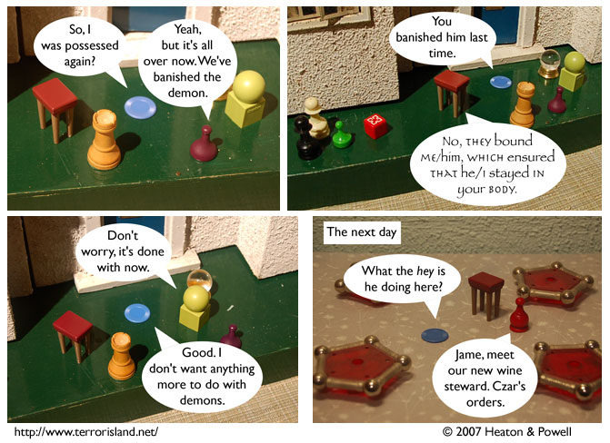

Strip #186
— Monday, August 20, 2007
Jame is mostly startled because they don’t serve wine at his restaurant
Notes, Thoughts, &c.
Ben’s Notes
Well, that about wraps up this demon storyline. I know there are a few loose ends you’ll be wondering about, but most of them are either things we’re going to address later, or they’re so far beneath our notice that we won’t even listen to questions about them.
In either case, the forum is a good place to discuss that sort of thing. There’s a thread there about how demons work, which so far has raised more questions than answers. (Current score: 1 question, 0 answers)
Lewis’s Notes
This week, I guest blog at Comix Talk. Now you have a new place to go to enjoy my prose stylings.